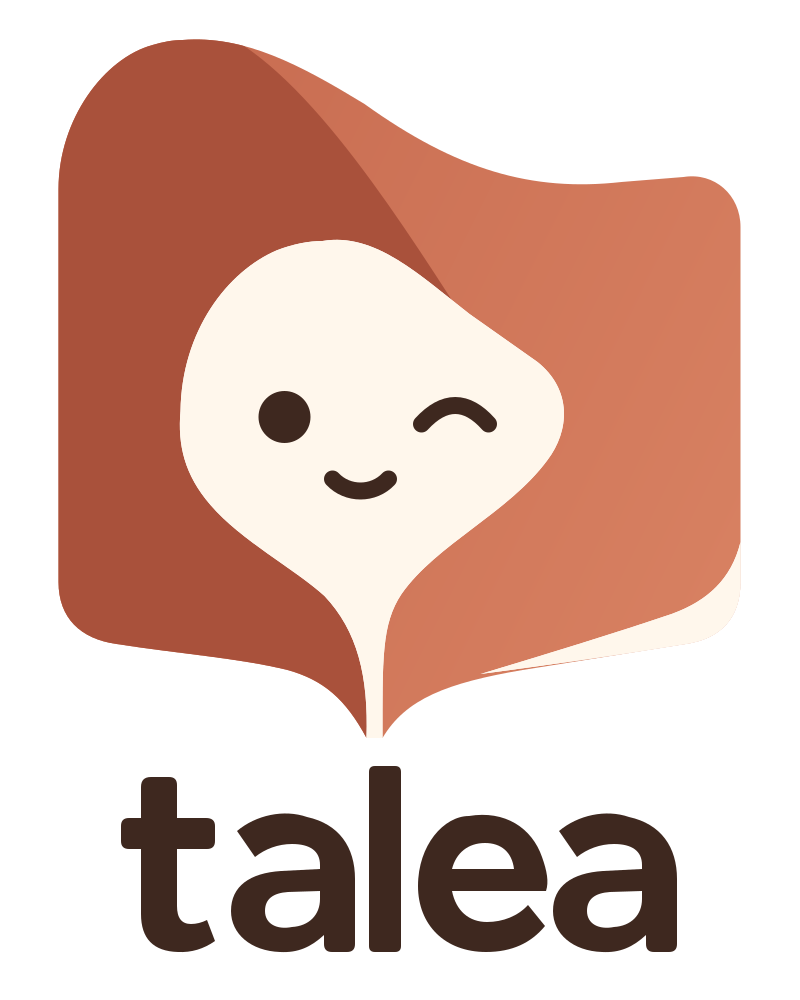
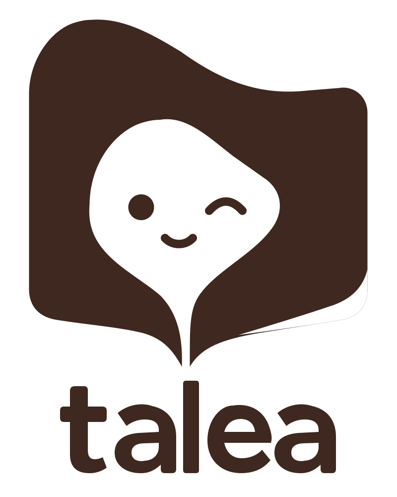
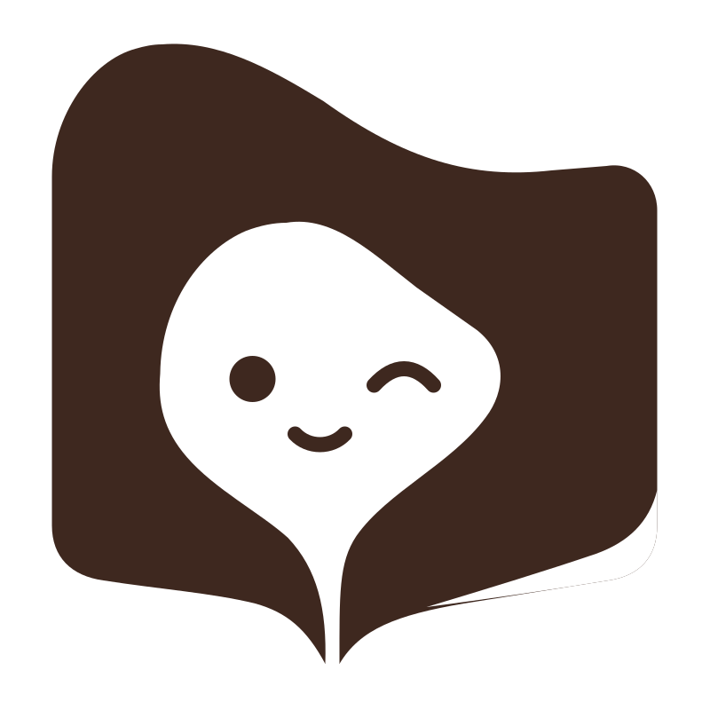

Talea · Terrakotta
Das ausgewählte Buch mit Augenzwinkern als saubere Vektorgrafik. SVGs skalieren frei; die Schrift ist als Pfad gezeichnet. PNGs haben einen transparenten Außenbereich.
Farbpalette
Terrakotta
#C76B50Falte
#A9513BLicht
#D78061Creme
#FFF7ECDunkelbraun
#3E281FLogo-Varianten











Kleine Größen
Für 16–64 Pixel entfällt die feine umgeschlagene Seitenkante. Die Gesichtszüge sind etwas größer. Ab 128 Pixeln wird die vollständige Bildmarke verwendet.
16 px
24 px
32 px
48 px
64 px
128 px
Weitere Dateien
Wortmarke · DunkelWortmarke · TerrakottaWortmarke · WeißKleine Bildmarke · SVGKleine Bildmarke · EinfarbigKleine Bildmarke · WeißApp-Icon · SVGApp-Icon · 1024 pxFavicon · ICOFavicon · SVGApple Touch Icon · 180 px


Einfarbige SVGs haben transparente Aussparungen im Gesicht und an der Seitenkante. Die weiße Version ist für dunkle Hintergründe gedacht. Das quadratische App-Icon hat einen deckenden cremefarbenen Hintergrund.